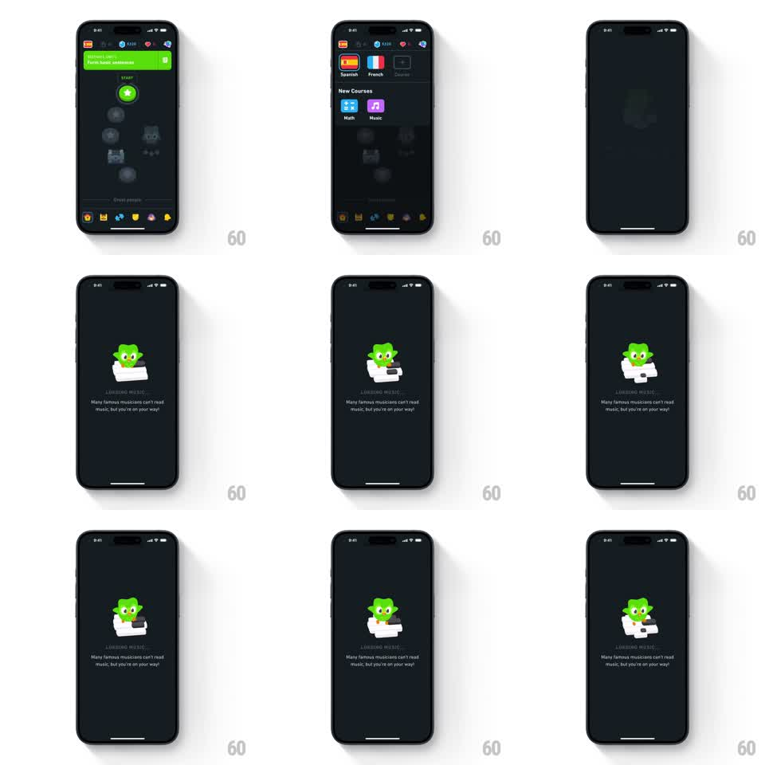

Media
Frame-by-frame

Rebuild this animation 1:1: Duolingo's music-course loading screen - tapping the Music tile in New Courses fades to a dark interstitial where Duo plays a white piano, hands moving over the keys, above a "LOADING MUSIC..." caption and a music-trivia line.

Rebuild this animation 1:1: Duolingo's music-course loading screen - tapping the Music tile in New Courses fades to a dark interstitial where Duo plays a white piano, hands moving over the keys, above a "LOADING MUSIC..." caption and a music-trivia line.
## Integration
Integration: stack-agnostic spec - springs given as stiffness/damping, timed motions as duration + curve; map every value to your framework and animation library of choice.
## Scene
Dark background (near-black navy). Entry point: course-select screen, New Courses section, purple Music tile. Loading screen: Duo seated at a white grand piano, center stage. Below: letterspaced gray caption "LOADING MUSIC...", then small copy: "Many famous musicians can't read music, but you're on your way!"
## Motion spec
Pattern: performing mascot loading loop.
- Transition in: fade over the course screen (200ms); Duo and piano scale 0.9 to 1.0 (250ms, ease-out).
- Playing loop: Duo's hands alternate over the keys (each hand translateY 0 to 6px and back, 300ms, 150ms apart, repeating) and 2 to 3 keys dip in sync with the hands (key top translateY 2px, 150ms).
- Duo sways with the music (rotation +-3deg, 1.8s sine) and bobs (translateY +-5px, 2s sine).
- The caption pulses (opacity 0.4 to 1.0, 1s sine loop).
## Calibration
- Hand/key sync sells the performance - a key must dip exactly when its hand lands.
- Keep the sway slow relative to the hands: fast hands, slow body.
## Reduced motion
Static composition, full-opacity caption, no loops.
## Don't miss
- The piano is white with black keys - it is the one bright object on the dark stage, keep the contrast.
- Entry comes from the Music tile specifically; the caption is fixed ("LOADING MUSIC..."), not templated.